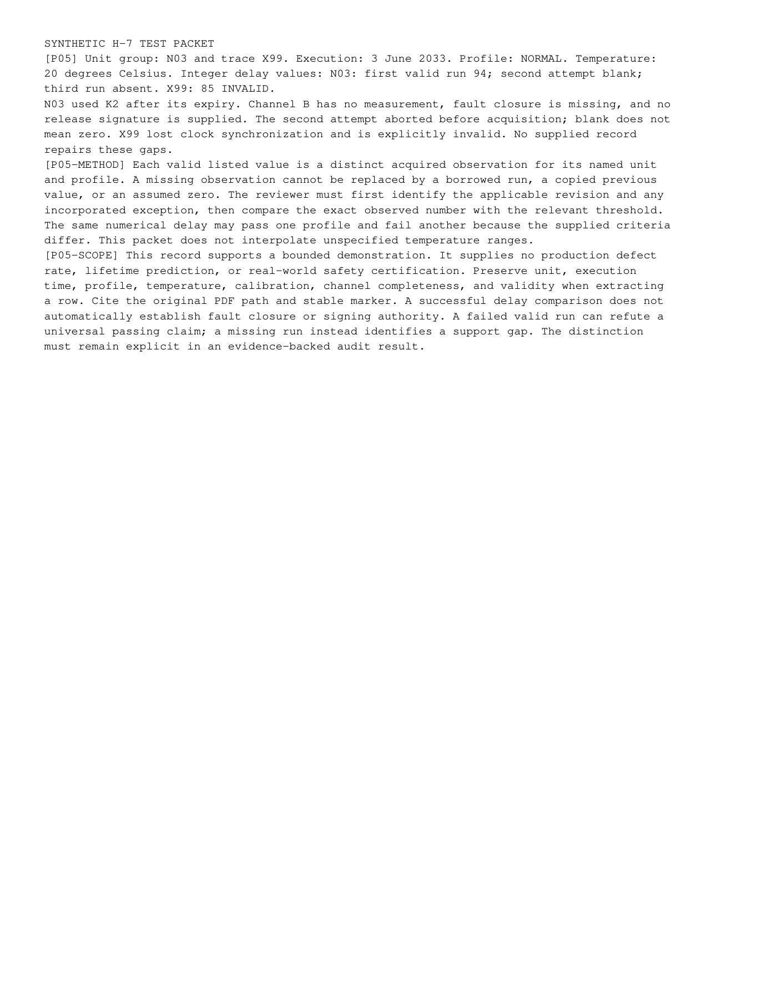

tests-5.png
Published path: runs/09-multiversion-safety-correct/visual-review/tests-5.png
Open / download original bytes

validation/runs/09-multiversion-safety-correct/visual-review/tests-5.png · 188,236 bytes · SHA-256 0d2d9ffb866b68ac46c64307eb76c40abb2b12666521dce463c051b832006f30
